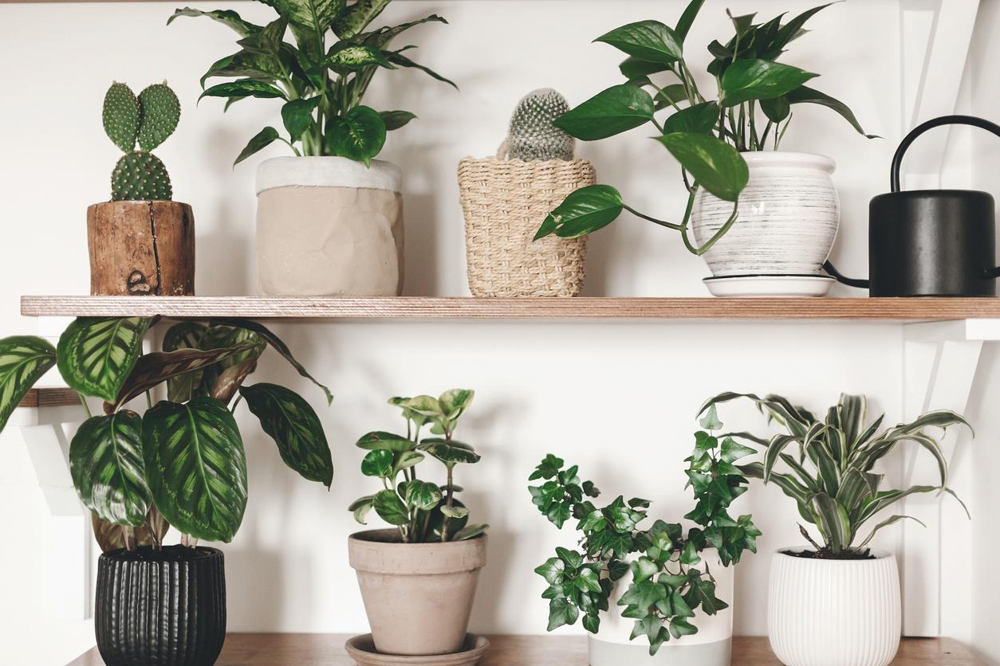

Consejos y decoración

-Combinar plantas de distintos tamaños.
-Usar macetas de barro o materiales reciclados.
-Colocar plantas cerca de ventanas.
-Crear pequeños jardines en estantes o escritorios.